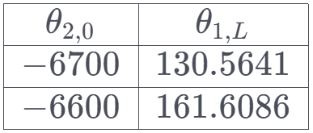

Good practice
Romanised operators
Use romanised operators such as $\sin$, $\frac{\mathrm{d}}{\mathrm{d}x}$ instead of $sin$, $\frac{d}{dx}$, etc.
Use empty lines
Using empty lines can improve the readability and neatness of your content. Empty lines are often useful before and after an equation, and between paragraphs of text. An empty line in markdown requires two spaces on the line, otherwise the line is ignored.
Space between numbers and units
Put appropriate space between a number and its unit, such as 5 m or 3 kg, according to the SI conventions.
Romanise units and check their case
Use romanised units such as $\text{m}$, $\text{kN}$ instead of $m$, $kN$. Ensure that the case of the unit is correct.
Add tests to response areas
In a response area, press configure then tests.
Tests allow you to enter potential student responses, define whether they are correct or not, then run the evaluation function on those student responses. This allows you to quickly test whether or not the evaluation function works as expected.
Save and publish as you go
Saving and publishing work regularly is recommended to prevent accidental data loss.
Use branching when relevant
Branching is a feature for worked solutions. It allows you to have different solution pathways Usage examples:
- When a question can be solved via multiple different methods, branching can be used for each method.
- When a question has multiple parts, where each part involves substitution of different values, branching can be used for each part.
Use pre-response area text to be clear what should be entered
Pre-response area text is found under configure - INPUT in the evaluation function.
You can use LaTeX in the pre-response area text.
Use \dfrac for bigger fractions when needed.
Use $\dfrac{numerator}{denominator}$ for bigger fractions when you need to display them more clearly or emphasize them. For example, $\dfrac{3}{4}$ will produce a bigger fraction than $\frac{3}{4}$.
Alternatively, you can use $\displaystyle$ at the start of an inline equation to render everything afterwards full-size (as in display maths mode), this is especially helpful for integrals.
Use \small when smaller fonts or fractions are needed
Use $\small{text}$ when you need to display smaller fonts or fractions in your LaTeX expressions. For example, $\small{\frac{1}{2}}$ will produce a smaller fraction than $\frac{1}{2}$.
Use audio clips
Just drag + drop an audio file into the milkdown editor.
Issue with input symbols
For the code of input symbols in the response areas, the system cannot accept brackets (i.e dot(x) for $\dot{x}$) and response must be formatted in different ways (i.e dot_x).
a_b will render as $a_b$ without adding an input symbol, but note that dot_x overrides the _ input (in this example, will render as $\dot{x}$ instead of $dot_x$)
Use live preview and permit all types of input
Live preview and input types are found in an evaluation function under configure - INPUT.
Live preview instantly renders a student's input. This is very useful for long/complicated equations, as it allows students to ensure their input is correct.
Latex help
-
Use
\begin{array}to generate a compact table i.e.\begin{array}{|c|c|} \hline \theta_{2,0} & \theta_{1,L}\\ \hline -6700 & 130.5641\\ \hline -6600 & 161.6086\\ \hline \end{array}
-
Use
\begin{aligned}to keep your working formatted nicely\begin{aligned} M_{d e f} &=\dfrac{1}{2}(M+M^T)\\ & =\dfrac{1}{2} \begin{pmatrix} 4 & 14\\ -6 & -11 \end{pmatrix}+\begin{pmatrix} 4 & -6\\ 14 & -11 \end{pmatrix}\\ & =\begin{pmatrix} 4 & 4\\ 4 & -11 \end{pmatrix} \end{aligned} -
Use
\leftand\rightfor equations with multiple brackets
f(x)=\left (\frac{(\cos (x) -x) + i(\sin (x) - x)}{wi} \right)
This also works for [ ] and \{ \}
- Use
\sin,\cos, etc. as a shortcut for\text{sin },\text{cos }, etc.